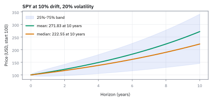
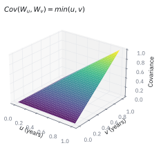
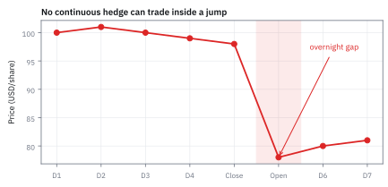
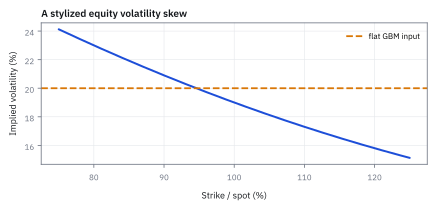

10.4 Why Geometric Brownian Motion (GBM) Is a Sensible Model for Stock Prices
GBM ผ่านเกณฑ์พื้นฐานที่ราคาหุ้นต้องมี แต่ตกที่หาง การกระโดด และความผันผวนที่ไม่คงที่ ใช้มันเป็นเส้นฐาน แล้ววัดว่าตลาดจริงเบี่ยงไปเท่าไร
ถ้าดัชนี S&P 500 เดินตาม GBM ที่ $\mu=10\%$ และ $\sigma=20\%$ ต่อปี วันที่ดัชนีปิดลบ 5% หรือมากกว่าควรเกิดบ่อยแค่ไหน? ข้อมูลจริงปี 2020 ปีเดียวมีวันแบบนั้นห้าวัน (9, 12, 16 และ 18 มีนาคม กับ 11 มิถุนายน) ควรเลิกใช้ GBM ไหม?
ลองตอบก่อนเปิดเฉลย
GBM ให้โอกาสวันละ 0.0021% หรือราวครั้งเดียวใน 189 ปี และโอกาสที่ปีหนึ่งจะมีห้าวันแบบนั้นราว $3\times10^{-14}$ แบบจำลองผิดที่หางแน่นอน แต่ยังใช้มันเป็นเส้นฐานได้ เพราะมันผ่านเกณฑ์ที่ราคาหุ้นต้องมี: ราคาบวก ไม่ขึ้นกับหน่วยราคา เกิดเองจากการทบต้นผลตอบแทนเล็ก ๆ ที่อิสระ และมีสูตรปิด คำตอบที่ถูกไม่ใช่เลิกใช้ แต่ใช้เป็นเส้นฐานแล้ววัดและเติมส่วนที่มันพลาด ซึ่งหน้านี้ทำให้ดูทีละข้อ
สิ่งที่เราจะสร้าง
10.1 ถึง 10.3 สร้าง GBM และอ่านผลของมัน หน้านี้ถามคำถามที่ต้องถามก่อนใช้แบบจำลองกับเงินจริง: มันเข้ากับหุ้นแค่ไหน เราจะไม่ตอบด้วยความรู้สึก แต่ตั้งเกณฑ์ที่ตรวจได้ แล้ววัดแต่ละข้อด้วยตัวเลข ทั้งจากแบบจำลองและจากข้อมูลจริงที่หนังสือเล่มนี้ใช้มาแล้ว
ครึ่งแรกเป็นเหตุผลฝั่งสนับสนุน: ราคาบวกและไม่ขึ้นกับหน่วย การทบต้นผลตอบแทนเล็ก ๆ ที่อิสระพาไปหา GBM เอง ผลตอบแทนรายวันไม่ต้องเป็น Normal และทุกคำตอบเป็นสูตรปิด ครึ่งหลังเป็นฝั่งค้าน: หางบาง ความผันผวนไม่คงที่ ราคากระโดด และตลาด option ไม่เชื่อ $\sigma$ ตัวเดียว แล้วสรุปว่าบนโต๊ะจริงใช้มันอย่างไร
ศัพท์ที่ใช้ในหัวข้อนี้
- Scale invariance
- กฎการขยับไม่เปลี่ยนเมื่อเปลี่ยนหน่วยราคา เช่นแตกพาร์หุ้น ใช้เป็นเกณฑ์ว่าแบบจำลองราคาหุ้นควรพูดเป็นเปอร์เซ็นต์ ไม่ใช่เป็นดอลลาร์
- Fat tails
- distribution ที่ให้โอกาสของการขยับแรงมากสูงกว่า Normal ที่ SD เท่ากัน ใช้เตือนว่าแบบจำลอง Normal ประเมินวันวิกฤตต่ำเกินไป
- Kurtosis
- $\mathbb E[(X-\mu)^4]/\sigma^4$ วัดน้ำหนักของหางเทียบกับตรงกลาง Normal มีค่า 3 (1.9) ค่ามากกว่า 3 เป็นสัญญาณของหางหนา
- Volatility clustering
- วันที่ขยับแรงมักตามด้วยวันที่ขยับแรง ความผันผวนจึงมาเป็นช่วง ขัดกับ $\sigma$ คงที่ของ GBM ใช้เป็นเหตุผลของแบบจำลองอย่าง GARCH (16.4)
- Jump
- การเปลี่ยนราคาทีเดียวโดยไม่มีการซื้อขายระหว่างทาง เช่น gap หลังข่าวตอนตลาดปิด GBM ห้ามเกิดตามสมบัติต่อเนื่องใน 10.3
- Implied volatility
- ค่า $\sigma$ ที่ใส่ในสูตรตั้งราคา option แบบ GBM (14.2) แล้วได้ราคาตลาดพอดี ใช้ quote ราคา option ด้วยหน่วยที่เทียบข้าม strike และอายุได้
- Delta hedge
- การถือหุ้นจำนวนหนึ่งเพื่อหักล้างการขยับเล็ก ๆ ของ option ต่อราคา ปรับได้เฉพาะเมื่อตลาดเปิดและราคาเดินต่อเนื่อง (18.4)
สัญลักษณ์และหน่วย
| สัญลักษณ์ | ความหมาย | หน่วย |
|---|---|---|
| $\mu,\ \sigma$ | drift และ volatility ของ GBM | ต่อปี, ต่อรากที่สองของปี |
| $m_d,\ s_d$ | ค่าเฉลี่ยและ SD ของ log return หนึ่งวันทำการ | ต่อวัน |
| $r$ | simple return ของหนึ่งวัน เช่น −5% | ไม่มีหน่วย |
| $z$ | ระยะของวันนั้นจากจุดกลาง ในหน่วย SD ของวัน | ไม่มีหน่วย |
| $R_k$ | simple return ของก้าวที่ $k$ ในการทบต้น | ไม่มีหน่วย |
| $K$ | จำนวนก้าวที่ขึ้นในแบบจำลองโยนเหรียญ | นับ |
| $\sigma_{\text{imp}}(K,T)$ | implied volatility ของ option strike $K$ อายุ $T$ | ต่อรากที่สองของปี |
ขั้นที่ 1 — เกณฑ์ข้อแรก: ราคาบวกและไม่ขึ้นกับหน่วยราคา
แบบจำลองราคาหุ้นที่ใช้ได้ต้องผ่านสองเกณฑ์ขั้นต่ำ ราคาต้องไม่ติดลบเพราะผู้ถือหุ้นเสียได้ไม่เกินเงินที่ลงไป และการแตกพาร์หุ้นซึ่งเป็นแค่การเปลี่ยนหน่วยต้องไม่เปลี่ยนความเสี่ยง ลองวัดแบบจำลองแบบบวกของ 10.1 กับหุ้น \$100 ที่ความผันผวน \$20 ต่อรากที่สองของปี (20%) ไม่มี drift ถือสิบปี และแตกพาร์ 10 ต่อ 1
แบบบวกให้ราคาติดลบใน 5.69% ของ scenario สิบปี GBM ให้ 0% เพราะราคาคือ exponential ส่วนการแตกพาร์หารราคาด้วย 10 ทั้งบนและล่างของตัวคูณ ตัวคูณของ GBM จึงไม่เปลี่ยนเลย กฎเดิมใช้ต่อได้ทันที
แบบบวกต้องหารความผันผวนเป็นดอลลาร์ด้วย 10 เองด้วยมือ ถ้าลืม หุ้นหลังแตกพาร์ราคา \$10 จะเหวี่ยงวันละ \$1.26 หรือ 12.6% ต่อวัน ส่วน GBM ไม่มีอะไรให้ลืม นี่คือ scale invariance
Figure 10.4a — หุ้น \$20 กับ \$500 ใช้ตัวคูณชุดเดียวกัน

ขั้นที่ 2 — เกณฑ์ข้อสอง: ทบต้นผลตอบแทนเล็ก ๆ ที่อิสระแล้วได้ GBM เอง
เหตุผลที่แข็งที่สุดของ GBM ไม่ใช่ความสวย แต่คือมันเป็นผลลัพธ์ ไม่ใช่สมมติฐาน ถ้าปีหนึ่งประกอบด้วย $n$ ก้าวสั้น ๆ แต่ละก้าวมีผลตอบแทน $R_k$ ที่อิสระ ค่าเฉลี่ย $\mu\Delta t$ และ SD $\sigma\sqrt{\Delta t}$ ราคาปลายปีคือผลคูณของ $1+R_k$ ใส่ log แล้วกระจายด้วย Taylor ของ $\ln(1+u)$
บรรทัดที่สี่ใช้ CLT (3.2): ผลรวมของก้าวอิสระจำนวนมากเข้าหา Normal โดยไม่ต้องให้แต่ละก้าวเป็น Normal บรรทัดที่ห้าใช้ law of large numbers: $R_k^2$ แต่ละตัวมีค่าเฉลี่ยราว $\sigma^2\Delta t$ ผลรวม $n$ ตัวจึงนิ่งอยู่ที่ $\sigma^2T$ ไม่สุ่มแล้ว ครึ่งหนึ่งของมันคือ $-\sigma^2/2$ ของ 10.1 โผล่มาเองจากการทบต้น
ตรวจด้วยตัวเลขได้: ให้ผลตอบแทนรายวันเป็น Normal ที่ค่าเฉลี่ย $0.10/252$ และ SD $0.20/\sqrt{252}$ แล้วหาค่าเฉลี่ยของ $\ln(1+R)$ ด้วย integration คูณ 252 ได้ 0.07999 ต่อปี ตรงกับ $\mu-\sigma^2/2=0.08$ ส่วนต่าง 0.00001 มาจากพจน์ลำดับสูงที่ตัดทิ้ง
ขั้นที่ 3 — ผลตอบแทนรายวันไม่ต้องเป็น Normal เลย
โจทย์ให้อะไรมาบ้าง: สมมติสุดขั้วว่า log return รายวันเป็นแค่ +1.26% หรือ −1.26% ด้วยโอกาสเท่ากัน เหมือนโยนเหรียญ ไม่มีอะไรคล้าย Normal ขนาดก้าวเลือกให้ SD ทั้งปีเท่ากับ 20%: $a=0.20/\sqrt{252}\approx0.0126$ ถ้าปีหนึ่งขึ้น $K$ วัน log return ทั้งปีคือ $a(2K-252)$ โดย $K$ เป็น Binomial(252, 1/2) ปีที่ลงเกิน 2 SD คือ $a(2K-252)\le-0.40$ หารด้วย $a$ ได้เงื่อนไขบน $K$ ในบรรทัดแรก
คำตอบ: ปีที่ลงเกิน 2 SD เกิด 2.53% ของเวลา เทียบ 2.28% ของ Normal และปีที่ลงเกิน 3 SD เกิด 0.150% เทียบ 0.135% ก้าวรายวันที่หน้าตาไม่ใช่ Normal เลยรวมกันแล้วได้ปีที่ใกล้ Normal มาก นี่คือเหตุผลที่ GBM ใช้ได้ดีกับ horizon ยาว แม้ผลตอบแทนรายวันจะไม่ใช่ Normal
ตรวจเองใน 10 วินาที: ส่วนเกินราว 11% ของค่า Normal มาจากการที่ $K$ เป็นจำนวนเต็ม ถ้าเลื่อนเกณฑ์ไปกลางช่องที่ $K=110.5$ Normal ให้ $\Phi\big((110.5-126)/\sqrt{63}\big)=\Phi(-1.953)\approx2.54\%$ ใกล้ 2.53% ทันที ค่าเฉลี่ย 126 และ variance 63 ของ $K$ มาจาก Binomial (1.5)
ขั้นที่ 4 — สองพารามิเตอร์ให้ทุกคำตอบเป็นสูตรปิด
โจทย์ให้อะไรมาบ้าง: อยากได้ภาพสิบปีของดัชนีสมมติ \$100 ที่ $\mu=10\%$ และ $\sigma=20\%$ ต่อปี: ค่าเฉลี่ย median และช่วงที่ครอบครึ่งกลางของ scenario ใช้สูตรจาก 10.2 และ quantile บนแกน log แบบ 10.1 โดย $z_{0.75}\approx0.674490$
คำตอบ: ค่าเฉลี่ย \$271.83 median \$222.55 และครึ่งกลางของ scenario อยู่ระหว่าง \$145.27 ถึง \$340.96 ทั้งหมดได้จากเครื่องคิดเลขในหนึ่งนาที ไม่ต้องจำลองสักเส้น แบบจำลองที่ซับซ้อนกว่าส่วนใหญ่ต้องใช้การจำลองหรือวิธีเชิงตัวเลขเพื่อให้ได้คำตอบเดียวกัน และมีพารามิเตอร์ให้ประมาณมากกว่า
ตรวจเองใน 10 วินาที: อัตราส่วนค่าเฉลี่ยต่อ median คือ $e^{0.02\times10}=e^{0.2}\approx1.2214$ ตามสูตร $e^{\sigma^2T/2}$ ของ 10.2 และ $271.83/222.55\approx1.2214$
Figure 10.4b — ดัชนีสมมติสิบปี: ค่าเฉลี่ย \$271.83 กับ median \$222.55

ขั้นที่ 5 — ฝั่งค้านข้อแรก: หางของ GBM บางเกินไป
ถึงเวลาตรวจเกณฑ์ที่ GBM อาจตก เริ่มจากคำถามเปิด ระวังหน่วย: ดัชนีปิดลบ 5% เป็น simple return ต้องแปลงเป็น log return $\ln(0.95)$ ก่อน แล้ววัดระยะจากจุดกลางของวันด้วย SD ของวัน ใช้ 252 วันทำการต่อปีจาก 1.1
$N$ คือจำนวนวันแบบนี้ในหนึ่งปี วันละโอกาสเท่ากันและอิสระกันตาม GBM หนึ่งวันจึงควรเกิดราวครั้งเดียวใน $1/0.0053\approx189$ ปี และห้าวันในปีเดียวแทบเป็นไปไม่ได้
ใต้ GBM ที่ $\sigma=20\%$ ห้าวันของปี 2020 อยู่ที่ −6.30, −7.96, −10.15, −4.25 และ −4.84 SD ส่วน Black Monday 19 ตุลาคม 1987 ที่ดัชนีลบ 20.47% ในวันเดียวอยู่ที่ −18.2 SD
ความผิดนี้ไม่ใช่เรื่องหางอย่างเดียว ช่วงมีนาคม 2020 ตลาดคาดความผันผวนสูงกว่า 20% มาก ดัชนี VIX ซึ่งคือ implied volatility 30 วันของ S&P 500 ปิดที่ 82.69 ในวันที่ 16 มีนาคม ถ้าใช้ $\sigma$ ระดับนั้น $z$ จะเล็กลงมาก (โจทย์ข้อ 2)
ความผิดจึงมีสองส่วน: หางบางของ Normal และ $\sigma$ ที่คงที่ ขั้นที่ 7 วัดส่วนที่สอง
Figure 10.4c — SD เท่ากัน แต่หางต่างกันมาก

ขั้นที่ 6 — แม้ในปีที่สงบ หางก็หนากว่า Normal
โจทย์ให้อะไรมาบ้าง: ผลตอบแทนรายวันของ SPY ปี 2024 จำนวน 252 วันที่ 1.9 คำนวณไว้: SD 0.792855% ต่อวัน moment รอบค่าเฉลี่ยลำดับสอง $m_2\approx0.626124$ และลำดับสี่ $m_4\approx1.841660$ ในหน่วยเปอร์เซ็นต์ยกกำลัง และมี 9 วันที่ต่ำกว่าค่าเฉลี่ยลบสอง SD ปี 2024 ไม่มีวิกฤต
คำตอบ: ปีที่ความผันผวนเพียงราว 12.6% ต่อปียังมีวันต่ำกว่า 2 SD 9 วันเทียบ 5.73 วันที่ Normal คาด และ kurtosis 4.70 สูงกว่า 3 ของ Normal ชัด หางหนาจึงไม่ได้เกิดแค่ในปีวิกฤต
ตรวจเองใน 10 วินาที: 1.9 เตือนไว้ว่าตัวเลข 9 กับ 5.73 ยังไม่ใช่การทดสอบนัยสำคัญ เพราะค่าเฉลี่ยและ SD ประมาณจากข้อมูลชุดเดียวกัน และวันต่าง ๆ อาจสัมพันธ์กัน หลักฐานที่ได้คือทิศทางเดียวกับปี 2020 ไม่ใช่ข้อพิสูจน์ด้วยตัวเอง
ขั้นที่ 7 — ฝั่งค้านข้อสอง: ความผันผวนมาเป็นช่วง ไม่คงที่
GBM ใช้ $\sigma$ ตัวเดียวทั้งปี ลองปีจำลองที่มีสามช่วง: 80 วันที่ SD รายวัน 0.8% ตามด้วย 55 วันที่ 2.8% และ 117 วันที่ 1.1% ถ้าฟิต GBM กับทั้งปี $\sigma$ ที่ได้คือรากของ variance เฉลี่ย แล้วดูว่าในช่วงปั่นป่วน วันที่เกินกรอบ 2 SD ของแบบจำลองเกิดบ่อยแค่ไหน
ในช่วงปั่นป่วน วันที่ทะลุกรอบ 2 SD เกิดราวหนึ่งในสี่วัน ไม่ใช่หนึ่งใน 22 วัน ส่วนช่วงเงียบกลับตรงข้าม กรอบกว้างเกินจริง ค่า $\sigma$ เฉลี่ยทั้งปีจึงผิดทั้งสองทาง และผิดแรงที่สุดตอนที่อันตรายที่สุด วงเงินและขนาด hedge ที่คิดจาก $\sigma$ ตัวเดียวจึงเล็กเกินไปตอนตลาดปั่นป่วน
สิ่งที่ช่วยคือความผันผวนมาเป็นช่วง: วันแรงบอกล่วงหน้าว่าพรุ่งนี้ก็น่าจะแรง แบบจำลองที่ใช้ข้อมูลนี้คือ GARCH ใน 16.4 ซึ่งยังเก็บโครง GBM ไว้ แค่ให้ $\sigma$ เปลี่ยนตามเวลา
Figure 10.4d — ความผันผวนมาเป็นช่วง ไม่คงที่

ขั้นที่ 8 — ฝั่งค้านข้อสาม: ราคากระโดดตอนที่ hedge ขยับไม่ได้
โจทย์ให้อะไรมาบ้าง: หุ้นสมมติปิด \$98 แล้วมีข่าวตอนตลาดปิด เปิดวันรุ่งขึ้นที่ \$78 ภายใต้ GBM ที่ $\sigma=20\%$ ต่อปี และพอร์ตหนึ่งถือ delta เทียบเท่า 100,000 หุ้นของหุ้นอีกตัวราคา \$500 ที่เจอ gap 5%
คำตอบ: gap 20.41% อยู่ที่ −18.14 SD ของวัน ซึ่ง GBM ถือว่าเป็นไปไม่ได้ แต่ของจริงเกิดจากข่าวงบหรือคดี delta hedge ที่ตั้งใจปรับทีละนิดไม่มีโอกาสปรับเลยเพราะไม่มีการซื้อขายระหว่างปิดกับเปิด gap แค่ 5% บนตำแหน่ง \$50 ล้านก็สร้างผลขาดทุนอันดับแรก \$2.5 ล้าน ก่อนนับ gamma และ spread
ตรวจเองใน 10 วินาที: $\ln(78/98)\approx-0.2283$ หารด้วย 0.0126 ได้ราว −18 และ $100{,}000\times\$500=\$50$ ล้าน คูณ 5% ได้ \$2.5 ล้าน
Figure 10.4e — ราคากระโดดข้ามคืน hedge ปรับไม่ทัน

ขั้นที่ 9 — ฝั่งค้านข้อสี่: ตลาด option ไม่เชื่อ σ ตัวเดียว
หลักฐานข้อสุดท้ายมาจากราคาที่ตลาดจ่ายจริง ถ้า GBM ที่มี $\sigma$ ตัวเดียวอธิบายตลาดได้ implied volatility ที่ย้อนออกมาจากราคา option ทุกตัวต้องเท่ากัน ส่วนต่างระหว่างค่าสูงสุดกับต่ำสุดข้าม strike และอายุจึงต้องเป็นศูนย์ บรรทัดแรกเป็นนิยามของการทดสอบนี้ ไม่ใช่ผลที่พิสูจน์ แล้วแทนด้วย skew สมมติในรูปถัดไป
option ที่ strike ต่ำกว่าราคาปัจจุบันมาก ซึ่งจ่ายเงินเมื่อหุ้นร่วงแรง ถูกตั้งราคาด้วยความผันผวนสูงกว่า option ที่ราคาปัจจุบัน ตลาดกำลังจ่ายเพิ่มเพื่อประกันหางซ้ายที่ GBM บอกว่าบาง เป็นหลักฐานเดียวกับขั้นที่ 5 แต่มาจากราคาที่คนยอมจ่าย ไม่ใช่จากข้อมูลย้อนหลัง
ทั้งที่ไม่เชื่อ ตลาดก็ยัง quote ด้วยภาษาของ GBM: แทนที่จะบอกว่า option ราคากี่ดอลลาร์ คนเทรดบอกว่า implied volatility 24% ซึ่งเทียบข้ามหุ้น strike และอายุได้ทันที GBM จึงเป็นระบบพิกัด และ smile คือการวัดว่าตลาดเบี่ยงจากพิกัดนั้นเท่าไร (14.4, 14.5)
Figure 10.4f — skew ของ implied volatility เทียบ σ ตัวเดียวของ GBM

คำถามที่ควรถามออกมาดัง ๆ
ถ้ามันผิดสี่ข้อ ทำไมยังเรียกว่า sensible? เพราะมันผิดในแบบที่วัดได้และซ่อมได้ทีละข้อ ความผิดแต่ละข้อมีชื่อ มีตัวเลข และมีแบบจำลองที่แก้เฉพาะข้อนั้น ส่วนสิ่งที่มันทำถูก คือราคาบวก scale invariance และการเกิดจากการทบต้น เป็นเกณฑ์ที่แบบจำลองซับซ้อนกว่าทุกตัวยังต้องรักษาไว้
แบบจำลองที่ซับซ้อนกว่าดีกว่าเสมอไหม? ไม่เสมอ แต่ละพารามิเตอร์ที่เพิ่มต้องประมาณจากข้อมูล และความคลาดเคลื่อนของการประมาณอาจใหญ่กว่าสิ่งที่ได้จากการอธิบายที่ดีขึ้น 10.1 แสดงว่าแม้ $\mu$ ตัวเดียวก็ต้องใช้ข้อมูล 48 ปี
GBM ใช้กับสินทรัพย์อื่นได้ไหม? ใช้ได้พอสมควรกับสิ่งที่ราคาบวกและขยับเป็นเปอร์เซ็นต์ เช่นหุ้น ดัชนี และค่าเงิน แต่ไม่เหมาะกับอัตราดอกเบี้ยที่มีแรงดึงกลับหาค่าเฉลี่ยระยะยาวและติดลบได้ (13.4, 20.5) หรือราคาไฟฟ้าที่กระโดดแรงและดึงกลับเร็ว (23.2)
ความผิดที่เกิดจากการเชื่อหรือไม่เชื่อ GBM มากเกินไป
ใช้ “ครั้งเดียวในร้อยปี” จาก GBM เป็นเพดานความเสี่ยง: ตัวเลข 189 ปีมาจากหาง Normal และ $\sigma$ คงที่ ปี 2020 มีห้าวันแบบนั้นในปีเดียว วงเงินและ stress test ต้องใช้ข้อมูลจริงหรือแบบจำลองหางหนาควบคู่เสมอ
ลืมแปลง simple return เป็น log return: ใช้ −0.05 เป็น log return ตรง ๆ ได้ครั้งเดียวใน 122 ปีแทน 189 ปี ความต่างนี้มาจากหน่วยล้วน ๆ ไม่ใช่จากแบบจำลอง ต้องระบุเสมอว่าเกณฑ์เป็นผลตอบแทนแบบไหน
เลิกใช้ GBM แล้วคิดว่า model risk หายไป: แบบจำลองที่ซับซ้อนกว่ามีพารามิเตอร์ที่ประมาณไม่นิ่ง ความเสี่ยงจากการเขียนโค้ด และความยากในการตรวจ ต้องเทียบกับเส้นฐาน GBM ทุกครั้ง เพื่อรู้ว่าส่วนต่างมาจากตลาดหรือจากแบบจำลอง
ใช้ทำอะไรบนโต๊ะจริง
บนโต๊ะจริง GBM เป็นระบบพิกัดตั้งต้น ใช้เพื่อ quote option เป็น implied volatility สร้างเส้นทางฐานให้ Monte Carlo ตรวจหน่วยของพารามิเตอร์ และคำนวณคำตอบปิดไว้เทียบกับแบบจำลองที่ซับซ้อนกว่า จากนั้นเลือกตัวซ่อมให้ตรงอาการ: ความผันผวนเป็นช่วงใช้ GARCH (16.4) หรือ stochastic volatility (14.7) ราคากระโดดใช้ jump model และ gap stress skew ใช้ volatility surface (14.5)
กฎตัดสินคือเพิ่มความซับซ้อนเฉพาะเมื่อข้อบกพร่องนั้นเปลี่ยนการตัดสินใจจริง เช่นวงเงินของพอร์ตที่ short option ข้ามวันประกาศงบต้องมี gap stress เสมอ แต่ scenario สิบปีสำหรับวางแผนเงินทุนอาจใช้ GBM พร้อมช่วงความอ่อนไหวของ $\mu$ และ $\sigma$ ก็พอ
สามโจทย์ตรวจความเข้าใจ
1. หุ้นสมมติที่ $\mu=8\%$ และ $\sigma=15\%$ ต่อปี ภายใต้ GBM วันที่ปิดลบ 5% หรือมากกว่าควรเกิดบ่อยแค่ไหน?
เฉลย
$m_d=(0.08-0.01125)/252\approx0.000273$ และ $s_d=0.15/\sqrt{252}\approx0.009449$ ได้ $z=(-0.051293-0.000273)/0.009449\approx-5.457$ โอกาสราว $2.42\times10^{-8}$ ต่อวัน หรือครั้งเดียวในราว 164,000 ปี หุ้นความผันผวนต่ำภายใต้ GBM “ไม่มีวันร่วงแรง” ซึ่งเป็นเหตุผลที่ต้อง stress หุ้นกลุ่มนี้แยกต่างหาก
2. ถ้าช่วงวิกฤตหนึ่งมีความผันผวนสมมติ 80% ต่อปี และ $\mu=10\%$ GBM ของช่วงนั้นคาดวันปิดลบ 5% หรือมากกว่ากี่วันต่อปี?
เฉลย
$m_d=(0.10-0.32)/252\approx-0.000873$ และ $s_d=0.80/\sqrt{252}\approx0.050395$ ได้ $z=(-0.051293+0.000873)/0.050395\approx-1.0005$ โอกาสราว 15.85% ต่อวัน หรือราว 40 วันต่อปีถ้าช่วงนั้นยาวทั้งปี ห้าวันของปี 2020 จึงไม่ประหลาดเลยสำหรับ GBM ที่ใช้ $\sigma$ ของช่วงวิกฤต ส่วนใหญ่ของ “ความเป็นไปไม่ได้” มาจากการใช้ $\sigma$ คงที่ 20%
3. พอร์ตหนึ่งถือ delta เทียบเท่า 100,000 หุ้นราคา \$500 ถ้าเจอ gap 20.47% แบบ Black Monday ผลขาดทุนอันดับแรกเท่าไร และ GBM ที่ $\sigma=20\%$ มองวันนั้นกี่ SD?
เฉลย
$100{,}000\times\$500\times20.47\%=\$10.235$ ล้าน และ $z=(\ln0.7953-0.000317)/0.012599=(-0.229036-0.000317)/0.012599\approx-18.2$ SD ขาดทุนที่แบบจำลองบอกว่าไม่มีวันเกิด คือเหตุผลที่ gap stress ต้องเป็นตัวเลขที่ตั้งเอง ไม่ใช่ quantile ของ GBM
คำนวณซ้ำด้วย JavaScript
รันใน Node.js ได้โดยไม่ติดตั้งแพ็กเกจ โค้ดแปลง simple return เป็น log return ก่อนวัดระยะเสมอ นับโอกาสห้าวันในปีด้วย Binomial โดยบวกทีละพจน์ นับปีแบบโยนเหรียญด้วยสัมประสิทธิ์ทวินามตรง ๆ หาค่าเฉลี่ยของ $\ln(1+R)$ ด้วย Simpson และพิมพ์ผลทุกขั้นเป็น JSON บรรทัดเดียว
function finite(x, name) {
if (typeof x !== 'number' || !Number.isFinite(x)) throw new TypeError(`${name} must be a finite number`);
return x;
}
function positive(x, name) {
if (finite(x, name) <= 0) throw new RangeError(`${name} must be positive`);
return x;
}
// Standard Normal CDF: Taylor series near the centre, continued fraction in the tails.
function normCdf(x) {
if (typeof x !== 'number' || Number.isNaN(x)) throw new TypeError('normCdf needs a number');
if (!Number.isFinite(x)) return x > 0 ? 1 : 0;
const ax = Math.abs(x), density = Math.exp(-ax * ax / 2) / Math.sqrt(2 * Math.PI);
if (ax < 3) {
let term = ax, sum = ax;
for (let k = 1; term > 1e-17 * sum; k++) { term *= ax * ax / (2 * k + 1); sum += term; }
return x < 0 ? 0.5 - density * sum : 0.5 + density * sum;
}
let f = 0;
for (let k = 300; k >= 1; k--) f = k / (ax + f);
const tail = density / (ax + f);
return x < 0 ? tail : 1 - tail;
}
const DAYS = 252; // trading days in a year (1.1)
// Daily log return under GBM: mean (mu - sigma^2/2)/252, SD sigma/sqrt(252).
function dailyLaw(mu, sigma) {
finite(mu, 'Drift'); positive(sigma, 'Volatility');
return {m: (mu - sigma * sigma / 2) / DAYS, s: sigma / Math.sqrt(DAYS)};
}
// A close-to-close simple return r is the log return ln(1 + r).
function zOfDay(mu, sigma, simpleReturn) {
if (finite(simpleReturn, 'Return') <= -1) throw new RangeError('A simple return must be above -100%');
const {m, s} = dailyLaw(mu, sigma);
return (Math.log(1 + simpleReturn) - m) / s;
}
function crashOdds(mu, sigma, simpleReturn) {
const p = normCdf(zOfDay(mu, sigma, simpleReturn));
return {p, perYear: DAYS * p, yearsPerEvent: 1 / (DAYS * p)};
}
// P(at least k of n independent days), summed term by term (no subtraction from 1).
function atLeast(n, p, k) {
if (!Number.isInteger(n) || !Number.isInteger(k) || k < 0 || k > n) throw new RangeError('Need whole numbers with 0 <= k <= n');
if (!(p >= 0 && p <= 1)) throw new RangeError('p must be a probability');
let logC = 0;
for (let j = 1; j <= k; j++) logC += Math.log((n - j + 1) / j);
let term = Math.exp(logC + k * Math.log(p) + (n - k) * Math.log1p(-p)), total = 0;
for (let j = k; j <= n; j++) { total += term; term *= (n - j) / (j + 1) * p / (1 - p); }
return total;
}
// Daily log returns of +a or -a with equal odds: the annual sum is a(2K - n), K ~ Binomial(n, 1/2).
function coinYearTail(sdMultiple) {
positive(sdMultiple, 'SD multiple');
const kMax = Math.floor((DAYS - sdMultiple * Math.sqrt(DAYS)) / 2);
let logC = 0, total = 0;
for (let k = 0; k <= kMax; k++) {
if (k > 0) logC += Math.log((DAYS - k + 1) / k);
total += Math.exp(logC - DAYS * Math.LN2);
}
return {kMax, exact: total, normal: normCdf(-sdMultiple)};
}
// E[f(R)] for R ~ N(m, s^2) by Simpson's rule over m +- 12 s.
function expectNormal(f, m, s, n = 20000) {
let sum = 0;
const a = m - 12 * s, h = 24 * s / n;
for (let i = 0; i <= n; i++) {
const r = a + i * h, w = i === 0 || i === n ? 1 : i % 2 ? 4 : 2;
const z = (r - m) / s;
sum += w * f(r) * Math.exp(-z * z / 2);
}
return sum * h / 3 / (s * Math.sqrt(2 * Math.PI));
}
// Student t with 3 degrees of freedom, scaled to the same SD: its variance is 3 before scaling.
function t3Cdf(x) {
const u = finite(x, 't value') / Math.sqrt(3);
return 0.5 + (Math.atan(u) + u / (1 + u * u)) / Math.PI;
}
const mu = 0.10, sigma = 0.20, day = dailyLaw(mu, sigma);
const crash = crashOdds(mu, sigma, -0.05);
const logCrash = normCdf((-0.05 - day.m) / day.s), tScale = day.s / Math.sqrt(3);
const tCrash = t3Cdf((-0.05 - day.m) / tScale);
const regimes = [[80, 0.008], [55, 0.028], [117, 0.011]];
const rms = Math.sqrt(regimes.reduce((a, [n, v]) => a + n * v * v, 0) / DAYS);
const meanVol = regimes.reduce((a, [n, v]) => a + n * v, 0) / DAYS;
console.log(JSON.stringify({
day, arithmetic10y: normCdf(-100 / (20 * Math.sqrt(10))),
split: {dollarPerDay: 20 / Math.sqrt(DAYS), percentAt10: 20 / Math.sqrt(DAYS) / 10},
logGrowth: {perDay: expectNormal(r => Math.log1p(r), mu / DAYS, sigma / Math.sqrt(DAYS)),
perYear: DAYS * expectNormal(r => Math.log1p(r), mu / DAYS, sigma / Math.sqrt(DAYS)),
halfVarPerDay: sigma * sigma / 2 / DAYS},
coin: {a: sigma / Math.sqrt(DAYS), two: coinYearTail(2), three: coinYearTail(3),
halfStep: normCdf((110.5 - DAYS / 2) / Math.sqrt(DAYS / 4))},
tenYears: {mean: 100 * Math.exp(mu * 10), median: 100 * Math.exp((mu - sigma * sigma / 2) * 10),
band: [0.25, 0.75].map(p => { let lo = -10, hi = 10; for (let i = 0; i < 200; i++) { const x = (lo + hi) / 2; if (normCdf(x) < p) lo = x; else hi = x; }
return 100 * Math.exp((mu - sigma * sigma / 2) * 10 + lo * sigma * Math.sqrt(10)); })},
crash: {z: zOfDay(mu, sigma, -0.05), ...crash, fiveInAYear: atLeast(DAYS, crash.p, 5)},
covid: [-0.0760, -0.0951, -0.1198, -0.0518, -0.0589].map(r => zOfDay(mu, sigma, r)),
blackMonday: zOfDay(mu, sigma, -0.2047),
figureTail: {logCrash, yearsLog: 1 / (DAYS * logCrash), tCrash, tPerYear: DAYS * tCrash, ratio: tCrash / logCrash},
spy2024: {sdYear: 0.00792855 * Math.sqrt(DAYS), expectedBelow2sd: DAYS * normCdf(-2), counted: 9,
kurtosis: 1.841660 / 0.626124 ** 2},
regimes: {annual: regimes.map(([, v]) => v * Math.sqrt(DAYS)), meanVol: meanVol * Math.sqrt(DAYS), rms: rms * Math.sqrt(DAYS),
hotBeyond2: 2 * normCdf(-2 * rms / 0.028), modelBeyond2: 2 * normCdf(-2)},
gap: {move: 78 / 98 - 1, z: zOfDay(mu, sigma, 78 / 98 - 1), deltaLoss: 100000 * 500 * 0.05},
skew: [0.75, 1, 1.25].map(k => 0.19 + 0.18 * (1 - k) + 0.10 * (k - 1) ** 2),
exercises: {
lowVol: crashOdds(0.08, 0.15, -0.05),
hotVol: crashOdds(0.10, 0.80, -0.05),
blackMonday: {loss: 100000 * 500 * 0.2047, z: zOfDay(0.10, 0.20, -0.2047)}
}
}));ที่มาที่ไป
Benoit Mandelbrot ชี้ในปี 1963 จากราคาฝ้ายว่าการขยับของราคามีหางหนากว่า Normal มาก ตั้งแต่ก่อนที่ GBM จะกลายเป็นมาตรฐาน ปี 1973 Black, Scholes และ Merton ใช้ GBM สร้างสูตรตั้งราคา option และหลัง Black Monday ปี 1987 skew ของ implied volatility ในตลาด option ดัชนีหุ้นสหรัฐฯ ก็ปรากฏชัดและอยู่มาจนปัจจุบัน ความรู้ว่า GBM ผิดตรงไหนจึงเก่าพอ ๆ กับการใช้มัน และทั้งสองอย่างอยู่คู่กันบนโต๊ะเทรดทุกแห่ง
สรุปคำตัดสิน: GBM กับหุ้น
| เกณฑ์ | GBM ให้ | ของจริง | ผลเวลาใช้งาน |
|---|---|---|---|
| ราคาบวก ไม่ขึ้นกับหน่วย | ผ่าน: ติดลบ 0% ตัวคูณไม่เปลี่ยนเมื่อแตกพาร์ | ตรงกัน | ใช้เป็นเส้นฐานได้ |
| ปีเป็นผลรวมของวัน | ผ่าน: CLT ให้ปีใกล้ Normal (2.53% เทียบ 2.28%) | ใกล้ Normal ที่ horizon ยาว | horizon ยาวใช้ได้ดีกว่า horizon สั้น |
| หาง | วันลบ 5% ครั้งเดียวใน 189 ปี | ห้าวันในปี 2020, kurtosis 4.70 ในปีสงบ | VaR และ stress ต่ำเกินจริง |
| ความผันผวน | คงที่ | มาเป็นช่วง: 26.1% ของวันในช่วงปั่นป่วนเกินกรอบ 2 SD | วงเงินเล็กเกินตอนอันตราย (16.4) |
| ความต่อเนื่อง | ไม่มี gap | gap จากข่าว, −20.47% ในวันเดียวปี 1987 | hedge และ stop-loss ขาดทุนเกินแผน |
| ราคา option | $\sigma$ เดียวทุก strike | skew: strike ต่ำแพงกว่า | ต้องใช้ volatility surface (14.5) |
สิ่งที่ควรตอบได้หลังอ่าน
- GBM ผ่านเกณฑ์พื้นฐานของหุ้น: ราคาบวก ไม่ขึ้นกับหน่วยราคา และเกิดเองจากการทบต้นผลตอบแทนเล็ก ๆ ที่อิสระ ซึ่งให้ $-\sigma^2/2$ มาเอง
- CLT ทำให้ผลตอบแทนรายวันไม่ต้องเป็น Normal: วันแบบโยนเหรียญรวมเป็นปีที่ลงเกิน 2 SD 2.53% เทียบ 2.28% ของ Normal
- หางของ GBM บางเกินไป: วันลบ 5% ครั้งเดียวใน 189 ปีที่ $\sigma=20\%$ แต่ปี 2020 มีห้าวัน และต้องแปลง simple return เป็น log return ก่อนวัด
- ความผิดส่วนใหญ่มาจาก $\sigma$ คงที่และการห้ามกระโดด ซ่อมได้ทีละข้อด้วย GARCH, jump model และ volatility surface
- ใช้ GBM เป็นระบบพิกัดและเส้นฐาน แล้วรายงานเสมอว่าตลาดจริงเบี่ยงไปเท่าไร
บทที่ 11 เปลี่ยนเครื่องมือ: เริ่มจากปัญหาการ hedge ด้วยต้นทุนต่ำสุด ซึ่งเขียนเป็น linear program ได้ และ GBM จะกลับมาอีกครั้งในบทที่ 13 เมื่อเราสร้าง Itô's lemma ที่พิสูจน์ตัวย่อ $dS_t=\mu S_t\,dt+\sigma S_t\,dW_t$ ของ 10.1